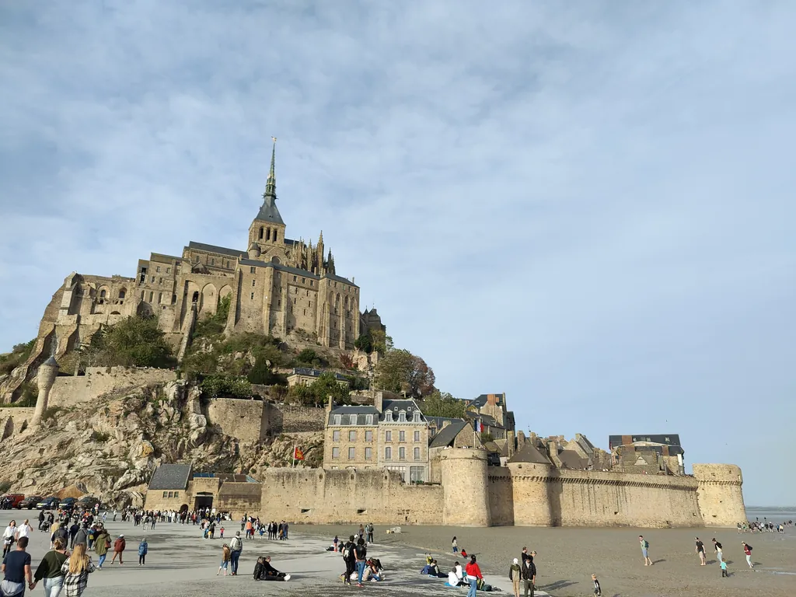

Não existe uma única melhor altura para visitar o Mont-Saint-Michel — depende de procurar clima ameno, pouca gente, marés espetaculares ou preços baixos. Este guia ajuda a ajustar a visita às suas prioridades.
No Mont-Saint-Michel o mês é só metade da decisão. A hora de chegada conta tanto: de manhã cedo e ao fim do dia a ilha parece outra. audioguia TouringBee pode ser iniciado a qualquer momento, e o mapa e o áudio funcionam offline — assim molda o passeio pelas horas calmas em vez do horário de um grupo.
Em resumo: quando ir
- Melhor equilíbrio: maio-junho ou setembro-início de outubro.
- Menos gente: novembro-março — e, em qualquer mês, de manhã cedo ou ao fim do dia.
- Dias mais quentes e longos: junho-agosto (também os mais movimentados).
- Marés mais espetaculares: em torno dos equinócios de março e setembro.
- Mais hipóteses de preços baixos e disponibilidade: época baixa e épocas intermédias (exceto datas de férias).
Os melhores meses
O fim da primavera (maio-junho) e o início do outono (setembro-início de outubro) são o ponto certo: clima ameno, arredores mais verdes, menos gente do que em pleno verão, com as marés de equinócio como bónus.
| Estação | Clima | Multidões | Marés |
|---|---|---|---|
| Primavera | ameno, a reverdecer | moderada | grandes marées de primavera |
| Verão | quente, dias longos | máxima | normais |
| Outono | ameno e depois mais fresco | menor | grandes marées de outono |
| Inverno | frio, dias curtos | calmo | algumas fortes |
Dia de semana ou fim de semana
Os visitantes referem muitas vezes que a meio da semana é mais calmo do que ao fim de semana, sobretudo na época intermédia. Se as datas forem flexíveis, escolha um dia de semana — e consulte o calendário das férias escolares francesas antes de reservar.
Manhã ou noite: a maior alavanca
Seja qual for o mês, a hora que escolher conta mais do que a estação. Os visitantes notam sempre o mesmo padrão: ao fim da manhã e ao meio-dia a Grande Rue está bem mais densa, enquanto de manhã cedo e mais tarde a ilha parece mais calma — as excursões chegam sobretudo a meio do dia e partem à tarde. As duas pontas do dia transformam tudo: na abertura os portões e a Grande Rue estão tranquilos e a luz é suave; ao fim do dia, quando os autocarros partem, a vila esvazia-se e a abadia fica iluminada depois de escurecer. Se só puder controlar uma coisa da visita, controle a hora.
Uma vantagem da visita por conta própria: não está preso a um grupo e pode mover-se contra a corrente. o passeio em áudio da TouringBee pela ilha começa a qualquer hora do dia e funciona offline — fácil de explorar às primeiras luzes ou nas horas calmas do fim do dia. Um só pagamento, um ano de acesso, sem subscrição.
Encaixar as marés no seu timing
As marés acrescentam mais uma camada ao « quando ». Para ver a ilha rodeada de água, veja não só o coeficiente de maré mas também a hora exata da preia-mar na sua data: quanto maior o coeficiente, mais espetacular a maré, e as grandes marées mais conhecidas caem em torno dos equinócios. Se preferir caminhar na baía com a maré baixa, é outro tema, onde as regras de segurança contam tanto como os horários. Ambos são tratados no nosso guia das marés.
O clima ao longo do ano
A primavera é amena e variável — leve camadas e um impermeável. O verão tem os dias mais quentes e longos, úteis para visitas cedo e tarde. O outono é ameno no início, mais fresco e húmido depois, com uma luz linda. O inverno é frio, ventoso, de dias curtos e ambiente sombrio sob o céu atlântico.
Uma constante: a baía está sempre exposta ao vento. Os visitantes subestimam-no muitas vezes — mesmo no verão há relatos de quem teve de vestir algo quente na ilha. Um corta-vento ganha aqui o seu lugar mais do que a previsão de temperatura sugere.
O inverno e janeiro

O inverno é a época calma: segundo muitos relatos, as muralhas podem ser quase só suas, e o Mont parece imponente sob céus cinzentos. O organismo nacional de turismo francês, France.fr, defende-o — fora de época, as tempestades atlânticas devolvem à ilha algo selvagem e medieval, e a ausência de multidões deixa-o a sós com a arquitetura. Janeiro é um dos meses mais calmos: frio, ventoso e com pouca luz, mas sem a densidade do verão. Em troca: o frio, o vento e alguns horários reduzidos (a abadia tem alguns dias de encerramento por ano). Se a solidão e a atmosfera o atraem mais do que longos dias quentes, o inverno é uma altura gratificante e subvalorizada.
Nascer e pôr do sol
O nascer e o pôr do sol dão a melhor luz do Mont e as suas horas mais calmas. O nascer é ideal sobretudo para quem dorme na ilha ou perto: antes da grande vaga de visitantes de um dia, as muralhas e a Grande Rue podem ser suas. O pôr do sol serve a todos e prolonga-se pela noite iluminada; os fotógrafos valorizam a « hora azul » logo a seguir, quando o granito vira a um azul-violeta profundo sob a luz quente dos candeeiros das muralhas. Os horários mudam ao longo do ano, por isso confirme para as suas datas.
Mês a mês
| Mês | O que esperar | Veredicto |
|---|---|---|
| Jan.-fev. | frio, calmo, dias curtos | pela atmosfera |
| Março | a época desperta, grandes marées de primavera | bom para as marés |
| Abril | mais ameno; as férias afetam a multidão | bom |
| Maio | ameno, dias mais longos | um dos melhores |
| Junho | quente, dias longos | um dos melhores |
| Jul.-ago. | quente, pico de visitantes | só com a hora certa |
| Setembro | quente + grandes marés | melhor escolha |
| Outubro | mais calmo, mais fresco | bom |
| Nov.-dez. | calmo, frio | pela solidão |
Por tipo de viajante
| Quem é você | Quando ir |
|---|---|
| Primeira vez, quer equilíbrio | maio-junho ou setembro, dia de semana, manhã cedo |
| Fotógrafo | marés de equinócio, nascer/pôr do sol na época intermédia |
| Família com crianças | fim da primavera ou início do outono, um dia de semana, de manhã — mais ameno e mais fácil de evitar a parte mais densa do dia |
| Com orçamento apertado | época baixa ou intermédia, dia de semana |
| Em busca de solidão | inverno, sobretudo janeiro, nas primeiras horas do dia |
Reservas e preços
No verão e nos fins de semana das grandes marées, os quartos perto do Mont enchem mais depressa — sobretudo se quiser dormir dentro das muralhas. A época intermédia e a baixa costumam facilitar encontrar lugar; de qualquer modo, confirme as tarifas atuais para as suas datas. Para a escolha ilha/continente, veja o nosso guia de onde ficar.
Verifique a disponibilidade para as suas datas
Os quartos perto do Mont esgotam depressa na época alta — compare e reserve com antecedência.
Lista prática
- Ponha a hora acima da estação — cedo e tarde mudam tudo.
- Vá a meio da semana e evite, quando puder, as férias escolares francesas.
- Planeie pelo calendário das marés se o seu objetivo for « a ilha no mar ».
- Leve um corta-vento seja qual for o mês.
- Confirme os horários e encerramentos de inverno antes de uma viagem fora de época.
- Para o nascer do sol, pondere dormir perto na véspera (ver o guia de hotéis).
Erros frequentes
As do costume: ir ao meio-dia em julho e culpar o lugar pela multidão; reservar um fim de semana de verão quando um dia de semana seria bem mais calmo; querer a foto da « ilha no mar » mas não ver o calendário e chegar com a maré baixa; achar o inverno « fechado » quando está calmo mas não trancado (confirme os horários); e não reservar as horas do início da manhã ou do fim do dia que fazem a visita.
Perguntas frequentes
Qual é a melhor época do ano para visitar o Mont-Saint-Michel?
Maio-junho e setembro-início de outubro oferecem o melhor equilíbrio entre clima ameno e menos gente, com as marés de equinócio como bónus.
Quando é que o Mont-Saint-Michel tem menos gente?
Normalmente mais calmo na época baixa, de novembro a março, e em qualquer mês de manhã cedo ou ao fim do dia; os dias de semana ganham ao fim de semana.
Vale a pena o Mont-Saint-Michel no inverno?
Sim, se procura solidão e atmosfera e não se importa com o frio e os dias curtos. Janeiro costuma ser muito calmo — confirme apenas os horários reduzidos.
Qual é a melhor altura do dia para visitar?
De manhã cedo na abertura, ou ao fim do dia quando as excursões partem. O meio-dia, sobretudo no verão, é o mais movimentado.
Quando são as melhores marés?
Em torno dos equinócios de primavera e outono, quando as grandes marées podem rodear a ilha de água. Confirme o calendário das marés e a hora da preia-mar para as datas exatas.
Continue a explorar
Em conclusão
A melhor altura para visitar o Mont-Saint-Michel são, na verdade, duas escolhas: a estação que se ajusta às suas prioridades e, mais importante, a hora de chegada. Vá no fim da primavera ou início do outono, a meio da semana, e apanhe a ilha cedo ou tarde, quando é de poucos e não de muitos. Junte uma maré forte e vê-la-á no seu máximo esplendor.
Um passeio por conta própria começa quando você quiser e funciona offline, por isso encaixa na perfeição nessas horas calmas — comece às primeiras luzes ou depois de a multidão partir e deixe a ilha contar-lhe as suas histórias quando o Mont está mais tranquilo.
Percorra o Mont-Saint-Michel ao seu ritmo
Histórias escritas por historiadores locais, num percurso GPS offline que inicia quando quiser.
Obter o audioguia — a partir de €9,99~2 horas · offline · um só pagamento · um ano de acesso
Alguns links nesta página são de afiliação ou de produto (Booking.com, TouringBee). Se comprar através deles, podemos receber uma pequena comissão — sem custo extra para si. Nunca influencia o que recomendamos. Veja a nossa divulgação de afiliação.